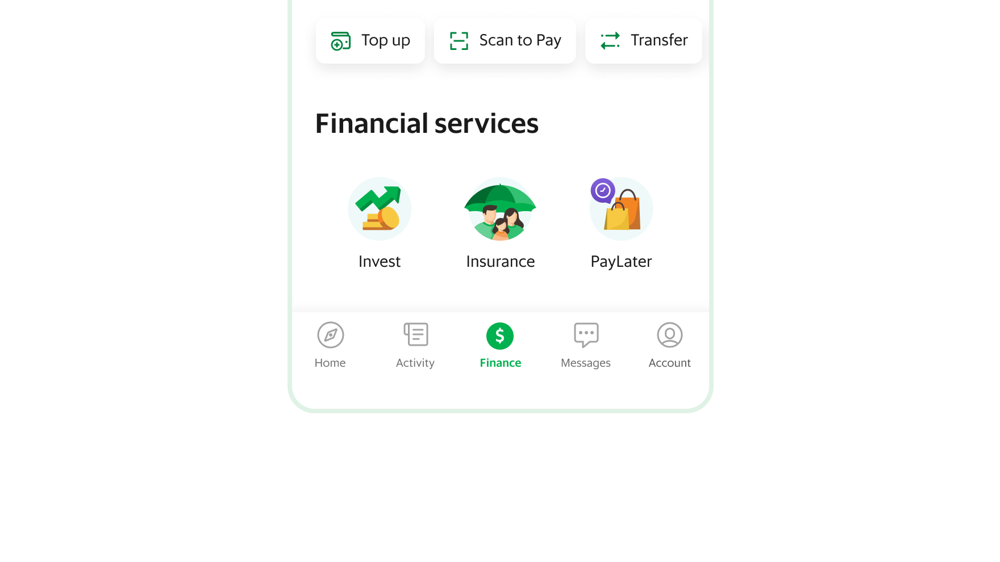
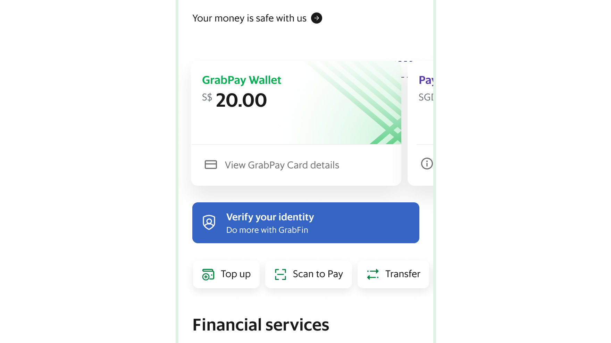
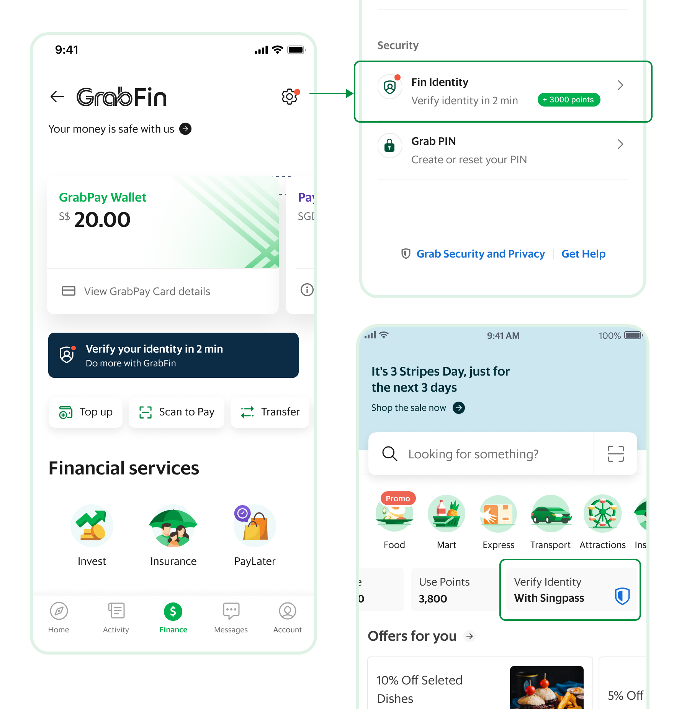
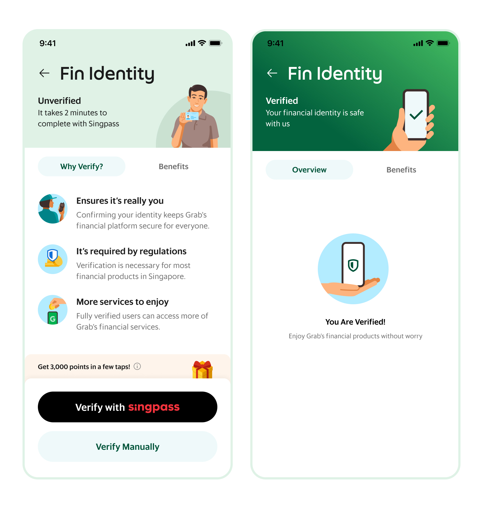
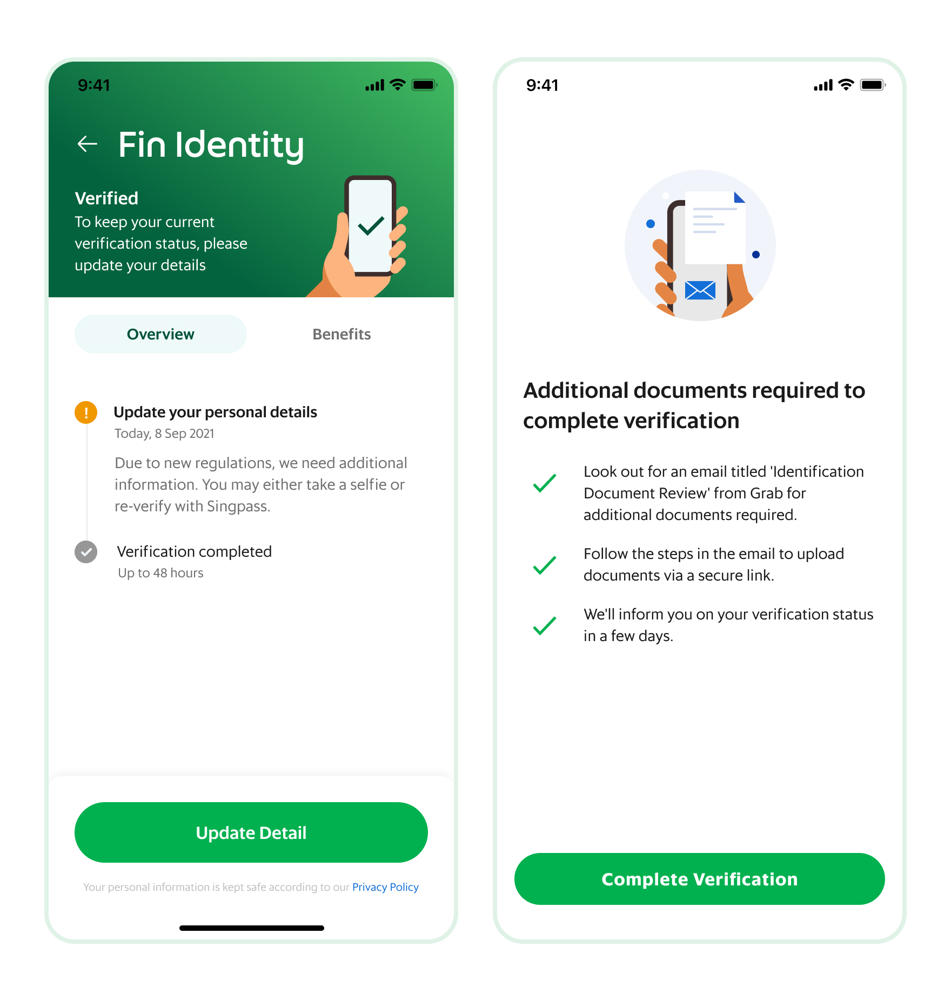
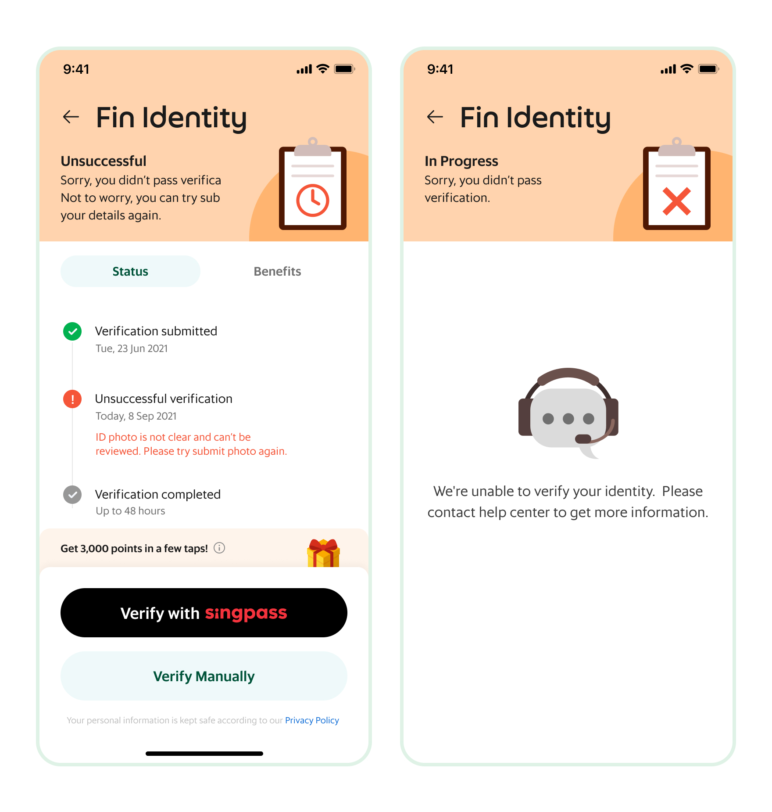

The problem
Only 35% of Grab users completed full KYC — the gateway to finance services — and over 45% dropped off at the very start. This capped growth in Pay Later, insurance, and investment.

RESEARCH SURFACED THREE BLOCKERS
No understood benefit
Users didn't understand the benefits of KYC.
No recovery path
Rejections from enhanced due diligence left users with no clear way to recover.
Felt bureaucratic
Verification felt bureaucratic, risky, and slow.
What I owned
01
Evidence
User interviews and surveys to pinpoint the real blockers.
02
Ideation
Turned findings into the core concept: a permanent, trust-led identity home.
03
Design
The Fin Identity Home, its entry points, and status-based flows.
04
Prioritization
Sequenced the roadmap into three phases.
Research
1.56M Singapore users had basic or no KYC. Four user types emerged.
Unaware
Did not start or complete KYC.
Unmotivated
Dropped off during KYC.
Rejected
Unable to complete due to missing information or additional requirements.
Approved
Successfully completed KYC.
Key insight: the invisible banner
The only entry point was a small, temporary banner that disappeared once verification was done, so users never built a habit around it. When asked to check their status, users went straight to My Account — but found no KYC-related information there.

2× more likely to click
An A/B test on messaging showed authority-based copy (“Government requires you to complete this”) beat value-based copy.
The solution
A single home for all identity information, built on four principles.
01
A permanent hub
No more disappearing banner.
02
Dynamic content
Tailored to beginner, pending, approved, and rejected users.
03
Trust anchors
Government co-branding and a clear data-privacy explanation.
04
Choice
SingPass verification (preferred by locals) and manual ID upload (preferred by foreigners).
Two entry points
We introduced two KYC entry points: one on the home page with KYC branding, and one in Settings, where users check their verification status.

Rollout in three phases
1
Unverified users
Two KYC entry points and a value-focused home experience.

2
KYC drop-offs
Compliance reminders, a resume/setup flow for partially completed KYC, and additional document checks.

3
Rejected users
Clear resolution guidance, personalized FAQ/live-support paths, and localized copy for Malaysia, Indonesia, and the Philippines.

Impact
35→50%
Full KYC penetration
Rose +15pts in Singapore after launch.
↑
Resubmission rate
Higher among rejected users, driven by clearer error resolution.
↑
Product activation
Increased activation of Pay Later, insurance, and investment.